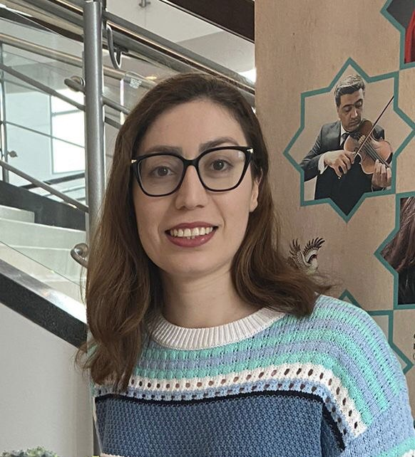

|
Parvin Malekzadeh
Hi! 


|
 |
{kind=link}
ResearchMy research focuses on advancing autonomous artificial intelligence, targeting decision-making and interaction within real-world environments. This goes beyond the limitations of task-specific agents and involves substantial work in Reinforcement Learning and Active Inference, spanning three critical areas:
|
|
Uncertainty-aware transfer across tasks using hybrid model-based successor feature
reinforcement learning
P Malekzadeh, M Hou, KN Plataniotis Neurocomputing, 2023 paper / webpage | |
|
AKF-SR: Adaptive Kalman filtering-based successor representation
P Malekzadeh, M Salimibeni, M Hou, A Mohammadi, KN Plataniotis Neurocomputing, 2022 paper / code / webpage |
|
|
Combining information-seeking exploration and reward maximization: Unified inference
on continuous state and action
spaces under partial observability
P Malekzadeh, KN Plataniotis Preprint paper / webpage |
|

|
A robust quantile huber loss with interpretable parameter adjustment in
distributional reinforcement learning
P Malekzadeh, KN Plataniotis, Z Poulos, Z Wang ICASSP , 2024 paper / code / webpage |

|
A Unified Uncertainty-Aware Exploration: Combining Epistemic and Aleatory
Uncertainty
P Malekzadeh, M Hou, KN Plataniotis ICASSP , 2023 paper / webpage |
|
MM-KTD: multiple model kalman temporal differences for reinforcement
learning
P Malekzadeh, M Salimibeni, A Mohammadi, A Assa, KN Plataniotis IEEE Access, 2020 paper / code / webpage |
{kind=link}
{kind=link}